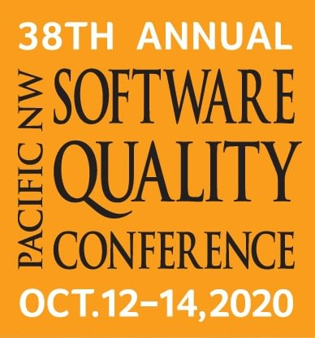
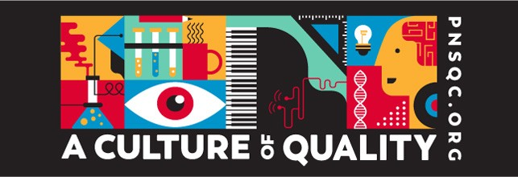

E2E Web Testing
While working as a Software Developer for Delber Technologies, I collaborated in the development of an End-to-end Automated Testing Framework for e-commerce platforms built with TestCafé, BrowserStack, and Jenkins for Continuos Integration which participated in the 38th edition of the Pacific Northwest Software Quality Conference 2020. You can read about my participation in PNSQC and find my published paper in TestCafe Grinding automation issues
Participating as a speaker / panelist in the PNSQC conference demonstrates my communication skills and the ability to work with a cross functional nearshore team of developers.
Testing is a crucial activity in the Software Development Process and effective testing produces high-quality software. Software test automation is used widely to improve the quality and efficiency of the software, using techniques such as End-To-End (E2E) to test an entire flow such as the final user simulating their actions (clicks, inputs, etc.). This is quite useful since as the project grows the number of scenarios to test also increased but building a test automation framework handling E2E testing is not easy in the programming world and even more so if you would like it to be configured to run on a Continuous Integration (CI) system that can execute all the tests every X amount of time or after a deploy.